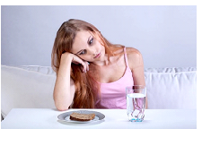
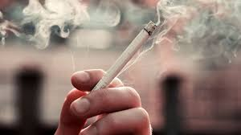

INGLES
InglesI.E.D.E.M. ASIGNATURA: INGLES DOCENTE: RAUL CAÑAS
INSTRUCCIONES GENERALES
1. DESCARGUE EL DOCUMENTO Y CONSERVELO EN FORMATO DE WORD PARA SOLUCIONARLO.
2. LEA ATENTAMENTE LAS INSTRUCCIONES DE CADA UNA DE LAS ACTIVIDADES PARA RESOLVER APROPIADAMENTE.
3. RESUELVA EL TALLER EN ESTE MISMO DOCUMENTO AGREGANDO LAS PAGINAS QUE SEAN NECESARIAS PARA SU SOLUCION.
4. AL TERMINAR DE RESOLVER, PUBLICARLO EN SU PAGINA WEB PARA SU RESPECTIVA EVALUACION.
5. FECHA FINAL DE ENTREGA: AGOSTO 4
ACTIVIDAD 1: LEE Y TRADUCE CADA UNO DE LOS PARRAFOS QUE SE DAN EN LA LECTURA A CONTINUACION.
Eating Disorders
Eating disorders are so common in America that 1 or 2 out every 100 students will struggle with one. The most common types of eating disorder are anorexia nervosa and bulimia nervosa (usually called simply “anorexia” and “bulimia”: But other food-related disorders, like binge eating disorders, body image disorders, and food phobias, are showing up more frequently than they used to.
Trastornos de la alimentación
Los trastornos alimentarios son tan comunes en Estados Unidos que 1 o 2 de cada 100 estudiantes sufrirán Luchar con uno. Los tipos más comunes de trastorno alimentario son la anorexia nerviosa y bulimia nerviosa (generalmente llamada simplemente “anorexia” y “bulimia”: pero otras enfermedades relacionadas con los alimentos trastornos, como los trastornos por atracón, los trastornos de la imagen corporal y las fobias a la comida, son apareciendo con más frecuencia que antes.
ANOREXIA
People with anorexia have an extreme fear of weight gain and a distorted view of their body size and shape. As a result, they can’t maintain a normal body weight. Some people with anorexia restrict their food intake by dieting, or excessive exercise. They hardly eat at all – and the small amount of food they do eat becomes an obsession. Other people with eating disorders do something called binge eating and purging, where they eat a lot of food and then try to get rid of the calories by forcing themselves to vomit, using laxatives, or exercising excessively.
ANOREXIA
Las personas con anorexia tienen un miedo extremo a ganar peso y una visión distorsionada de su Tamaño y forma del cuerpo. Como resultado, no pueden mantener un peso corporal normal. Algunas personas con anorexia restringen su ingesta de alimentos mediante dietas o ejercicio excesivo. Casi no comen nada y la pequeña cantidad de comida que comen se convierte en una obsesión. Otras personas con trastornos alimentarios hacen algo llamado atracones y purgas, donde Comen mucha comida y luego intentan deshacerse de las calorías obligándose a vomitar. Usar laxantes o hacer ejercicio excesivo.
BULIMIA Bulimia is similar to anorexia. With bulimia, a person binge eats (eats far too much food) and then tries to compensate it extreme ways, such as forced vomiting or excessive exercise, to prevent weight gain. Over time, these steps can be dangerous. To be diagnosed with bulimia, a person must be binging and purging regularly, at least twice a week for a couple of months. People with bulimia eat a large amount of food (often junk food) at once, usually in secret. The person typically feels powerless to stop eating and can only stop once he or she is too full to eat any more.
BULIMIA
La bulimia es similar a la anorexia. Con bulimia, una persona come compulsivamente (come demasiada comida) y luego intenta compensarlo de formas extremas, como vómitos forzados o exceso ejercicio, para prevenir el aumento de peso. Con el tiempo, estos pasos pueden resultar peligrosos. Ser diagnosticada con bulimia, una persona debe darse atracones y purgarse regularmente, al menos dos veces a la semana durante un par de meses. Las personas con bulimia comen una gran cantidad de comida (a menudo comida chatarra).comida) a la vez, generalmente en secreto. La persona normalmente se siente impotente para dejar de comer y sólo puede parar cuando esté demasiado lleno para comer más. Kidshealth.org (abreviado)
ACTIVIDAD 2: BUSCA UNA IMAGEN QUE PUEDA IDENTIFICAR CADA UNO DE LOS PARRAFOS DE LA LECTURA ANTERIOR Y AGREGALO EN LA SOLUCIÒN DEL TRABAJO PROPUESTO
Trastornos de la alimentación

Anorexia

Bulimia
ACTIVITY 3: RESUELVE EL CUESTIONARIO QUE SE DA A CONTINUACIÓN A PARTIR DE LA LECTURA.
A- Read the text and decide whether these sentences are true (T) or false (F). Correct the false ones.
1. A great number of American students will suffer from eating disorders. ____
2. Anorexia and bulimia are the only food-related disorders. _____
3. Anorexics like their body. ______
4. Some anorexics eat very little and do too much exercise. ______
5. Some bulimics try to lose their calories by exercising regularly. ______
ACTIVIDAD 3: RESUELVE EL CUESTIONARIO QUE SE DA A CONTINUACIÓN A PARTIR DE LA LECTURA.
A- Lee el texto y decide si estas oraciones son con verdadero (V) o falso (F). Corrige las falsas.
1. Un gran número de estudiantes estadounidenses sufrirán trastornos alimentarios. __V__
2. La anorexia y la bulimia son los únicos trastornos relacionados con la alimentación. _F____
3. A las anoréxicas les gusta su cuerpo. __F____
4. Algunas anoréxicas comen muy poco y hacen demasiado ejercicio. ____V__
5. Algunas bulímicas intentan perder calorías haciendo ejercicio con regularidad. __V____
B- Answer the following questions with complete sentences.
1. What are the symptoms of bulimia?
2. When can we say that a person suffers from bulimia?
3. Why do bulimics eat so much?
B- Responde las siguientes preguntas con frases completas.
1. ¿Cuáles son los síntomas de la bulimia?
Síntomas de la bulimia
Repetir episodios de ingerir cantidades excesivas de alimentos en una única vez
Durante el atracón, la persona tendrá una pérdida de control, sin poder dejar de comer o sin ser capaz de controlarlo
Tras un atracón, forzar el vómito
Hacer ejercicio excesivo para no aumentar el peso
Utilizar laxantes, diuréticos después de comer
Ayunar
2. ¿Cuándo podemos decir que una persona sufre bulimia?
La presencia de atracones: conocidos como episodios de ingestas excesivas y rápidas de comida y que se encuentran asociadas a una sensación de falta de control.
Presencia de conductas compensatorias: conductas como el vómito inducido, el uso de laxantes y diuréticos, restricciones alimentarias o la hiperactividad física, que se realizan con el objetivo de intentar compensar los efectos de la sobre ingesta. (*La presencia de ambos ocurren de promedio al menos, una vez a la semana durante tres meses).
Autoimagen negativa: sentimientos de gran insatisfacción con la imagen corporal, distorsión del peso y el volumen del cuerpo, que hacen que se muestre una gran preocupación por el peso y figura.
3. ¿Por qué las bulímicas comen tanto?
Las personas con bulimia comen una cantidad mayor de comida de lo que comería la mayoría de las personas en una situación similar, en un breve período de tiempo (atracón). Entonces, para evitar subir de peso, hacen algo por eliminar la comida que ingirieron (se purgan), vomitar
ACTIVITY 4: COMPLETA EL SIGUIENTE CUADRO CON LA INFORMACIÒN QUE SE PIDE: ESCRIBE EN CADA CASO TRES SUGERENCIAS APLICANDO LAS EXPRESIONES: SHOULD – SHOULDN’T / HOW ABOUT…? / WHY DON`T YOU…? PARA EXPRESAR LA POSIBLE SOLUCIÒN A CADA UNA DE ESTAS SITUACIONES DE SALUD.
UTILIZA VOCABULARIO Y EXPRESIONES ESTUDIADAS Y TRABAJADAS EN CLASE
EATING DISORDERS
WHY DON`T YOU…?
YOU SHOULD… / YOU SHOULDN`T…
HOW ABOUT GOING TO…?
ANOREXIA
BULIMIA
ACTIVIDAD 4: COMPLETA EL SIGUIENTE CUADRO CON LA INFORMACIÒN QUE SE PIDE: ESCRIBE EN CADA CASO TRES SUGERENCIAS APLICANDO LAS EXPRESIONES: DEBE – NO DEBE / ¿QUÉ TAL…? / ¿POR QUÉ NO…? PARACA
EXPRESAR LA POSIBLE SOLUCIÒN A CADA UNA DE ESTAS SITUACIONES DE SALUD.
UTILIZA VOCABULARIO Y EXPRESIONES ESTUDIADAS Y TRABAJADAS EN CLASE
TRASTORNOS DE LA ALIMENTACIÓN
Por qué no hablamos un poco de cómo te sientes últimamente con respecto a la comida y tu cuerpo? No debes sentirte solo/a en esto; hay muchas personas que entienden lo que estás pasando y pueden apoyarte. Qué tal si vamos a dar un paseo y hablamos sobre cómo te has estado sintiendo últimamente?
ANOREXIA
Por qué no considerar buscar ayuda profesional si sientes que tu relación con la comida no es saludable. Hablar con un psicólogo o nutricionista puede ser un buen primer paso. Debes recordar que una alimentación balanceada es esencial para mantener tu cuerpo y mente sanos. Comer una variedad de alimentos te proporciona los nutrientes necesarios. Qué tal si vamos a un lugar donde podamos disfrutar de una comida nutritiva y equilibrada. Podemos probar nuevos sabores y disfrutar de la compañía.
BULIMIA
Por qué no hablamos con un profesional que pueda ayudarte a sentirte mejor?
No debes sentirte avergonzado/a por buscar ayuda; es un acto valiente. ¿Qué tal si vamos a buscar información juntos/as sobre cómo mejorar tu bienestar?
ACTIVITY 5: ELABORA UNA LISTA DE 12 HABITOS SALUDABLES Y NO SALUDABLES CON SU RESPECTIVA IMAGEN.
LUEGO ESCRIBE PARA CADA UNO UNA SUGERENCIA APLICANDO LAS EXPRESIONES: SHOULD – SHOULDN’T / HOW ABOUT…? / WHY DON`T YOU. SIGUE EL EJEMPLO:
SUGERENCIA:
- WE SHOULD DRINK WATER BECAUSE IT IS NECESSARY AND IMPORTANT FOR OUR HEALTH.
- HOW ABOUT DRINKING WATER FOR HAVING A BERTTER HEALTH?
- WHY DON’T YOU DRINK WATER TO HAVE GOOD HEALTH?
ACTIVIDAD 5: ELABORAR UNA LISTA DE 12 HABITOS SALUDABLES Y NO SALUDABLES CON SU RESPECTIVA IMAGEN.
LUEGO ESCRIBE PARA CADA UNO UNA SUGERENCIA APLICANDO LAS EXPRESIONES: DEBE – DEBE NO / CÓMO
ACERCA DE…? / ¿POR QUÉ NO? SIGUE EL EJEMPLO:
Hábitos Saludables
Alimentación equilibrada

2.Hidratación adecuada

Ejercicio regular

4 .Dormir bien

5 .Practicar la meditación o el mindfulness

6 .Evitar el consumo de alcohol y tabaco

7 .Mantener una buena higiene personal

8 .Controlar el tiempo frente a las pantallas

9. Realizar chequeo médicos regulares

10.Socializar
11 .Practicar actividades creativas

12 .Manejo del tiempo

Hábitos No Saludables
1.Consumo excesivo de alimentos procesados y azúcares

2 .Sedentarismo
3 .Privación del sueño

4 .Consumo de alcohol en exceso

5 .Fumar

6 .Saltarse comidas

7 .Comer en exceso

8 .Abuso de cafeína

9 .Mala postura

10 .Automedicación
11 .Uso excesivo de dispositivos electrónicos

12 .Negación de problemas de salud mental

Hábitos Saludables
1.Alimentación equilibrada
1.Balanced diet
Debe: Incluir una variedad de alimentos en cada comida para asegurarse de obtener todos los nutrientes necesarios.
You should: Include a variety of foods at each meal to ensure you get all the necessary nutrients.
Debe no: Excluir grupos de alimentos importantes sin la guía de un nutricionista.
Do not: Exclude important food groups without the guidance of a nutritionist.
¿Por qué no? ¿Por qué no pruebas nuevas recetas saludables para hacer la alimentación más interesante?
Why not? Why don't you try new healthy recipes to make eating more interesting?
2.Hidratación adecuada
2.Adequate hydration
oDebe: Beber agua regularmente durante el día.
oMust: Drink water regularly throughout the day.
oDebe no: Sustituir el agua por bebidas azucaradas.
Shouldn't: Replace water with sugary drinks.
o¿Cómo acerca de...? ¿Cómo acerca de llevar una botella de agua contigo para mantenerte hidratado?
oHow about...? How about carrying a water bottle with you to stay hydrated?
3.Ejercicio regular
3.Regular exercise
Debe: Realizar actividades físicas que disfrutes, como caminar, nadar o bailar.
You should: Do physical activities that you enjoy, such as walking, swimming or dancing.
Debe no: Forzarte a hacer ejercicios que no te gustan, ya que puede llevar a la desmotivación.
Shouldn't: Force yourself to do exercises that you don't like, as it can lead to demotivation.
¿Por qué no? ¿Por qué no pruebas una nueva clase de fitness para variar tu rutina?
Why not? Why not try a new fitness class to vary your routine?
4.Dormir bien
4.Sleep well
Debe: Mantener una rutina de sueño regular, acostándose y levantándose a la misma hora todos los días.
You should: Maintain a regular sleep routine, going to bed and getting up at the same time every day.
Debe no: Usar dispositivos electrónicos justo antes de dormir.
Do not: Use electronic devices right before going to sleep.
¿Cómo acerca de...? ¿Cómo acerca de establecer una rutina de relajación antes de acostarte?
How about...? How about establishing a relaxation routine before bed?
5.Practicar la meditación o el mindfulness
5.Practice meditation or mindfulness
oDebe: Dedicar unos minutos cada día a la meditación para reducir el estrés.
oMust: Dedicate a few minutes each day to meditation to reduce stress.
oDebe no: Ignorar las señales de estrés o ansiedad.
Do not: Ignore signs of stress or anxiety.
o¿Por qué no? ¿Por qué no pruebas una aplicación de meditación guiada?
or Why not? Why not try a guided meditation app?
6.Evitar el consumo de alcohol y tabaco
6.Avoid alcohol and tobacco consumption
Debe: Buscar alternativas saludables, como bebidas sin alcohol y actividades físicas.
You should: Look for healthy alternatives, such as non-alcoholic drinks and physical activities.
Debe no: Ceder a la presión social para consumir estas sustancias.
Shouldn't: Give in to social pressure to consume these substances.
¿Cómo acerca de...? ¿Cómo acerca de probar bebidas sin alcohol en la próxima salida social?
How about...? How about trying non-alcoholic drinks at the next social outing?
7.Mantener una buena higiene personal
7.Maintain good personal hygiene
Debe: Practicar una higiene adecuada, incluyendo el lavado de manos y el cepillado de dientes.
You should: Practice proper hygiene, including handwashing and brushing teeth.
Debe no: Descuidar la higiene, especialmente en tiempos de enfermedad.
Do not: Neglect hygiene, especially in times of illness.
¿Por qué no? ¿Por qué no estableces un recordatorio para cambiar tu cepillo de dientes regularmente?
Why not? Why not set a reminder to change your toothbrush regularly?
.Controlar el tiempo frente a las pantallas
.Control time in front of screens
Debe: Limitar el tiempo frente a dispositivos electrónicos y hacer pausas regulares.
You should: Limit time in front of electronic devices and take regular breaks.
Debe no: Pasar horas seguidas frente a la pantalla sin descansos.
Must not: Spend hours in front of the screen without breaks.
¿Cómo acerca de...? ¿Cómo acerca de programar momentos sin pantallas durante el día?
How about...? How about scheduling screen-free times during the day?
9.Realizar chequeos médicos regulares
9.Perform regular medical checkups
Debe: Asistir a revisiones médicas periódicas para monitorear la salud.
You must: Attend periodic medical check-ups to monitor health.
Debe no: Ignorar síntomas o retrasar las visitas al médico.
You should not: Ignore symptoms or delay visits to the doctor.
¿Por qué no? ¿Por qué no agendar tu próxima revisión médica hoy mismo?
Why not? Why not schedule your next medical check-up today?
10.Socializar
10.Socialize
Debe: Mantener contacto con amigos y familiares para apoyo emocional.
You should: Maintain contact with friends and family for emotional support.
Debe no: Aislarse socialmente, especialmente en momentos difíciles.
Should not: Socially isolate yourself, especially in difficult times.
¿Cómo acerca de...? ¿Cómo acerca de organizar una reunión con amigos este fin de semana?
How about...? How about organizing a get-together with friends this weekend?
11.Practicar actividades creativas
11.Practice creative activities
Debe: Dedicarse a hobbies que promuevan la creatividad, como pintar o escribir.
You should: Dedicate yourself to hobbies that promote creativity, such as painting or writing.
Debe no: Descuidar las actividades creativas por falta de tiempo.
Do not: Neglect creative activities due to lack of time.
¿Por qué no? ¿Por qué no pruebas una nueva actividad creativa este mes?
Why not? Why not try a new creative activity this month?
12.Manejo del tiempo
12.Time management
Debe: Planificar el día con antelación para reducir el estrés.
You should: Plan your day in advance to reduce stress.
Debe no: Dejar todo para el último momento.
Shouldn't: Leave everything until the last minute.
¿Cómo acerca de...? ¿Cómo acerca de usar una agenda para organizar tus tareas diarias?
How about...? How about using a planner to organize your daily tasks?
Hábitos No Saludables
Unhealthy Habits
1.Consumo excesivo de alimentos procesados y azúcares
1.Excessive consumption of processed foods and sugars
Debe: Optar por opciones de alimentos frescos y naturales.
Must: Opt for fresh and natural food options.
Debe no: Abusar de la comida rápida y los dulces.
Must not: Abuse fast food and sweets.
¿Por qué no? ¿Por qué no intentas preparar tus propios snacks saludables?
Why not? Why don't you try making your own healthy snacks?
2.Sedentarismo
2.Sedentary lifestyle
Debe: Incorporar más movimiento en el día a día, como caminar o hacer estiramientos.
You should: Incorporate more movement into your daily life, such as walking or stretching.
Debe no: Pasar largas horas sin moverse.
Do not: Spend long hours without moving.
¿Cómo acerca de...? ¿Cómo acerca de dar un paseo después de cada comida?
How about...? How about taking a walk after every meal?
3.Privación del sueño
3.Sleep deprivation
Debe: Priorizar el sueño y establecer una rutina de descanso.
You should: Prioritize sleep and establish a rest routine.
Debe no: Sacrificar el sueño por trabajo o entretenimiento.
Do not: Sacrifice sleep for work or entertainment.
¿Por qué no? ¿Por qué no ajustas tu horario para asegurarte de dormir lo suficiente?
Why not? Why not adjust your schedule to ensure you get enough sleep?
4.Consumo de alcohol en exceso
4.Excessive alcohol consumption
Debe: Limitar la ingesta de alcohol y optar por opciones más saludables.
You should: Limit alcohol intake and opt for healthier options.
Debe no: Usar el alcohol como método para lidiar con el estrés.
Do not: Use alcohol as a method to deal with stress.
¿Cómo acerca de...? ¿Cómo acerca de establecer un límite de consumo de alcohol por semana?
How about...? How about setting a weekly alcohol consumption limit?
5.Fumar
5.Smoking
Debe: Buscar ayuda para dejar de fumar, como terapias o grupos de apoyo.
You should: Seek help to quit smoking, such as therapy or support groups.
Debe no: Subestimar los efectos negativos del tabaco en la salud.
You should not: Underestimate the negative effects of tobacco on health.
¿Por qué no? ¿Por qué no consultas con un profesional para encontrar un plan para dejar de fumar?
Why not? Why not consult with a professional to find a plan to quit smoking?
6.Saltarse comidas
6.Skipping meals
Debe: Mantener un horario regular de comidas para un metabolismo saludable.
Must: Maintain a regular meal schedule for a healthy metabolism.
Debe no: Saltarse comidas, especialmente el desayuno.
Do not: Skip meals, especially breakfast.
¿Cómo acerca de...? ¿Cómo acerca de preparar comidas fáciles y rápidas para evitar saltarte alguna?
How about...? How about preparing quick and easy meals to avoid skipping any?
7.Comer en exceso
7. Overeating
Debe: Comer porciones adecuadas y equilibradas.
You should: Eat adequate and balanced portions.
Debe no: Comer por ansiedad o aburrimiento.
Shouldn't: Eat because of anxiety or boredom.
¿Por qué no? ¿Por qué no practicas la alimentación consciente para disfrutar cada bocado?
Why not? Why don't you practice conscious eating to enjoy every bite?
8.Abuso de cafeína
8.Caffeine abuse
Debe: Limitar el consumo de café y otras bebidas con cafeína.
You should: Limit your consumption of coffee and other caffeinated beverages.
Debe no: Beber cafeína en exceso, especialmente por la tarde.
Do not: Drink caffeine excessively, especially in the afternoon.
¿Cómo acerca de...? ¿Cómo acerca de probar infusiones o tés sin cafeína?
How about...? How about trying caffeine-free infusions or teas?
9.Mala postura
9.Bad posture
Debe: Mantener una buena postura al sentarse y estar de pie.
You must: Maintain good posture when sitting and standing.
Debe no: Ignorar la importancia de una postura correcta.
Do not: Ignore the importance of correct posture.
¿Por qué no? ¿Por qué no intentas ejercicios de estiramiento para mejorar tu postura?
Why not? Why don't you try stretching exercises to improve your posture?
10.Automedicación
10.Self-medication
Debe: Consultar siempre a un médico antes de tomar medicamentos.
You should: Always consult a doctor before taking medications.
Debe no: Tomar medicamentos sin receta o sin indicaciones médicas.
You should not: Take medications without a prescription or without medical indications.
¿Cómo acerca de...? ¿Cómo acerca de llevar un registro de tus medicamentos y consultar con tu médico?
How about...? How about keeping track of your medications and consulting with your doctor?
11.Uso excesivo de dispositivos electrónicos
11.Excessive use of electronic devices
Debe: Tomar descansos regulares para descansar la vista y la mente.
You should: Take regular breaks to rest your eyes and mind.
Debe no: Pasar largas horas frente a pantallas sin interrupciones.
Must not: Spend long hours in front of screens without interruptions.
¿Por qué no? ¿Por qué no estableces límites de tiempo para el uso de dispositivos electrónicos?
Why not? Why don't you set time limits for the use of electronic devices?
12.Negación de problemas de salud mental
12.Denial of mental health problems
Debe: Reconocer y buscar ayuda para problemas de salud mental.
You should: Recognize and seek help for mental health problems.
Debe no: Ignorar síntomas de ansiedad o depresión.
Do not: Ignore symptoms of anxiety or depression.
¿Cómo acerca de...? ¿Cómo acerca de hablar con un profesional de salud mental sobre tus sentimientos?
How about...? How about talking to a mental health professional about your feelings?